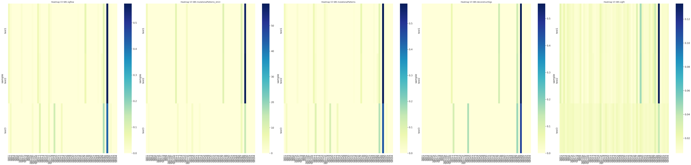
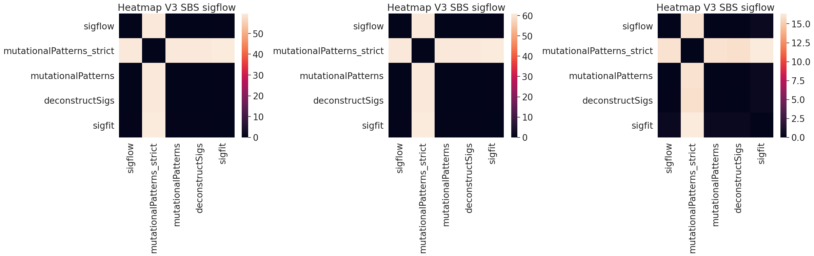
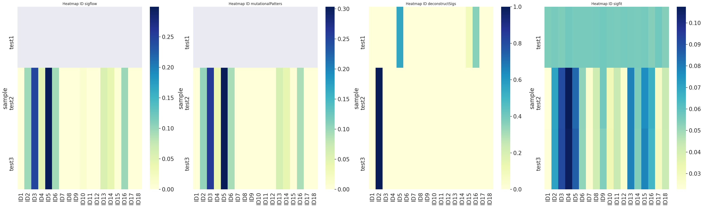
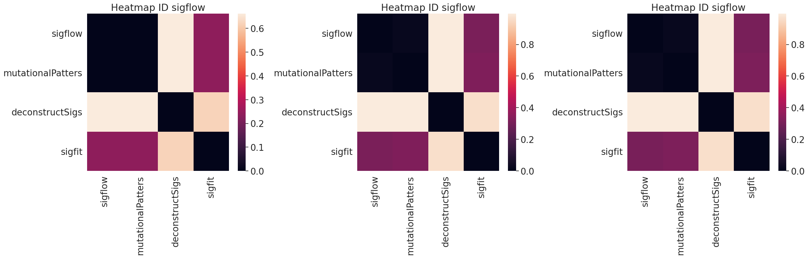
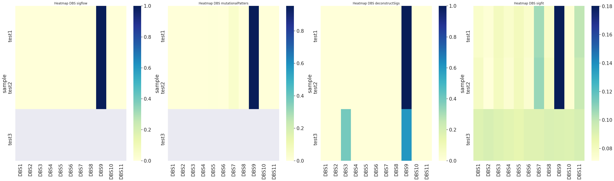
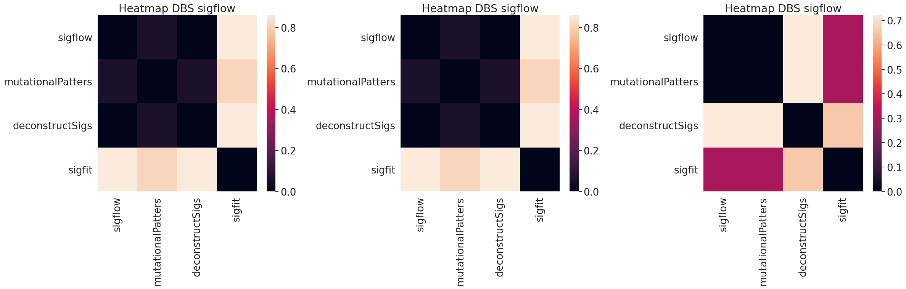
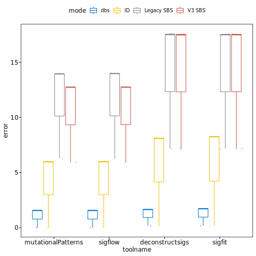

Legacy SBS
Contributions for all COSMIC Legacy SBS signatures to the overall signature.

Heatmap for difference between the predicted contributions by different tools. One for each sample.

Interactive bar charts of COSMIC V3 SBS signature contributions, per sample and for each tool.
V3 SBS
Contributions for all COSMIC Legacy SBS signatures to the overall signature.
Heatmap for difference between the predicted contributions by different tools. One for each sample.
Interactive bar charts of COSMIC V3 SBS signature contributions, per sample and for each tool.
ID
Contributions for all COSMIC Legacy SBS signatures to the overall signature.
Heatmap for difference between the predicted contributions by different tools. One for each sample.
Interactive bar charts of COSMIC V3 SBS signature contributions, per sample and for each tool.
DBS
Contributions for all COSMIC Legacy SBS signatures to the overall signature.
Heatmap for difference between the predicted contributions by different tools. One for each sample.
Interactive bar charts of COSMIC V3 SBS signature contributions, per sample and for each tool.
RMSE
Root Mean Squared Error between reconstructed and overall signature.
About:
This tool is a collaboration between Drexel University (PI Rosen) , and Fox Chase Cancer Center (PI Arora) . This work was supported by NSF grants #1936791 and #1919691, Fox Chase Cancer Center Risk Assessment Program Funds, and DOD award W81XWH-18-1-0148. Read the associated publication for more information.FAQs / Resources:
Where can I find the tools used ?
- MutatitionalPatterns https://bioconductor.org/packages/release/bioc/html/MutationalPatterns.html
- Sigflow/ Sigminer https://github.com/ShixiangWang/sigflow
- Sigfit https://github.com/kgori/sigfit
- DeconstructSigs https://github.com/raerose01/deconstructSigs
Additional reading: review paper
Omichessan, H., Severi, G., & Perduca, V. (2019). Computational tools to detect signatures of mutational processes in DNA from tumours: A review and empirical comparison of performance. PLOS ONE, 14(9), e0221235. https://doi.org/10.1371/journal.pone.0221235
What reference genomes are supported?
MetamutationalSigs supports:
GRCh37/ hg19 Homo sapiens
GRCh38/ hg38 Homo sapiens
GRCm37/ mm9 Mus musculus
GRCm38.p6/ mm10 Mus musculus
Rnor_6.0/ rn6 Rattus norvegicus
What is the format for my files?
Your files need to be in VCF format. For more information https://www.internationalgenome.org/wiki/Analysis/vcf4.0/
Where is my analysis running?
All analysis is run locally. No data leaves your computer. The web browser user interface is also running locally on your computer, so you can feel free to analyze your protected data.